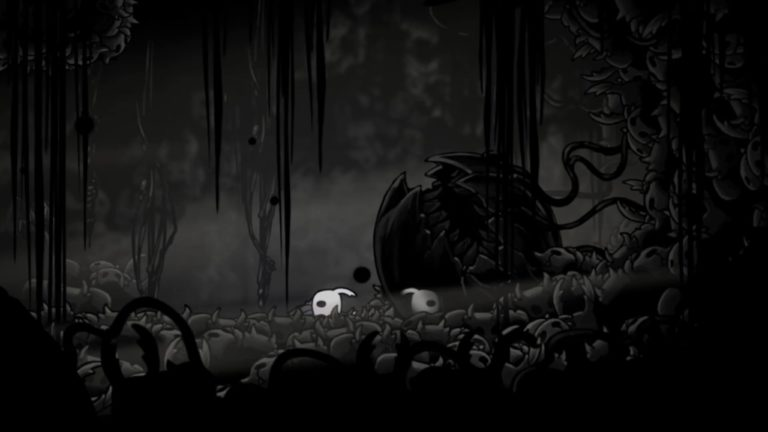

A história do jogo: (artigo tirado do Torre De Controle)
Ascensão e Queda Há muito tempo o reino de Hallownest vivia em paz e harmonia. Era uma época de prosperidade em que muitos reverenciavam uma criatura divina conhecida como Radiância. Devido aos poderes dela, o reino começou a viver em unificação entre diversas tribos existentes que trabalhavam juntas para construir um belo reino nas profundezas.
No reino de Hallownest existiam diversos seres. Dentre eles havia os Wyrms, criaturas anciãs colossais que seriam equivalentes a dragões em outras mitologias. Em certo momento da história, dizem que o último Wyrm conhecido morreu e para essa espécie a morte não simboliza o fim, mas sim uma transição da vida em que o ser passa por um processo de metamorfização e renasce na forma de um pequeno inseto detentor de uma capacidade intelectual muito acima dos demais.
E esse último Wyrm falecido deu origem a um importante personagem, o Rei Pálido, o qual ressurgiu na Borda do Reino, onde ainda é possível ver os restos do Wyrm que foi antes.

Ainda que existam diversas interpretações a respeito da relação entre a Radiância, o Rei Pálido e o reino de Hallownest, a teoria mais adotada pela maioria dos jogadores é a de que a Radiância, por ser oriunda da Tribo da Mariposa, utilizava essa habilidade para controlar e produzir uma mentalidade coletiva em todos os seres de Hallownest.
Quando o Rei Pálido surge, ele atribui inteligência a diversos insetos de várias regiões, possibilitando a eles a capacidade de um pensamento próprio, desse modo, esses começaram a se emancipar do controle mental e venerar o rei como uma espécie de divindade. Em vista disso, muitos insetos começaram a acreditar inclusive que ele era o responsável pela criação do mundo e de tudo que havia no mesmo. Vale ressaltar, foi durante esse período em que o Rei Pálido era o governador de toda Hallownest que a maioria das construções e arquitetura foram desenvolvidas.
Dessa maneira, com o propósito de confrontar o poder do rei, a Radiância foi utilizando do seu poder concedido através da Dream Nail e começou a entrar nos sonhos de seus antigos adoradores, provocando a infecção em cada um deles, os transformando em seres raivosos, agressivos e irracionais.
Perante essa situação, o Rei Pálido iniciou seus estudos e experimentos com o Vazio, uma substância encontrada no abismo de Hallownest. O seu intuito era criar um receptáculo totalmente livre de qualquer sentimento que seria o receptáculo vazio. E visto que esse ser não possuiria nenhum sentimento ou vontade, no momento em que a Radiância tentasse tomar a sua mente, ficaria presa ali para sempre.

Diante disso, com a finalidade de gerar os receptáculos, O Rei Pálido buscou o auxílio da Dama Branca, um ser superior designado por muitos do reino como a Rainha de Hallownest. Diversas tentativas foram realizadas, porém todos receptáculos produzidos possuíam algum tipo de sentimento,e por consequência, eram prontamente descartados pelo rei em seu local de nascimento, no Abismo. Em razão disso, vale salientar que é possível observar algumas máscaras espalhadas pelo mapa, as quais representam as inúmeras tentativas falhas cometidas pelos dois.Finalmente, depois de muito sacrifício, o Rei Pálido conseguiu gerar um receptáculo perfeito, sem que houvesse nenhum tipo de sentimento, e que conseguiria conter Radiância aprisionada para sempre. Esse receptáculo ficou intitulado como Hollow Knight.
Entretanto, assim que o Hollow Knight é criado, o rei comete um erro fatal. Isto é, no instante em que o receptáculo anterior ao perfeito está sendo descartado, Hollow Knight olha para ele com uma expressão de remorso, e quem sabe até mesmo com sentimento de compaixão pelo anterior. Desse modo, sem que o Rei Pálido notasse, esse sentimento faz com que ele não seja um receptáculo totalmente vazio, o que acidentalmente, levaria o reino a destruição.
A relevância de Lurien para o reino de Hallownest ainda é um mistério atualmente, acredita-se que ele morava no alto da Cidade das Lágrimas e tinha em sua posse diversos servos e seus próprios guardas pessoais denominados como Cavaleiros Sentinela. Provavelmente Lurien era um dos mais nobres seres de todo o reino. Ele se tornou um selo pela sua lealdade ao Rei Pálido pois, sem o rei, nada que ele possuía seria possível.
Por outro lado, Monomon era um dos seres mais inteligentes de todo o reino. Ela era conhecida como a professora e chefe de pesquisa de Hallownest, e tinha como seu aprendiz um jovem chamado Quirrel. É possível encontrar em diversos arquivos estudos dela envolvendo receptáculos e o Vazio.
Já Herrah, uma das mais poderosas do reino e rainha das aranhas, muito provavelmente era estéril ou apenas não poderia ter filho, pois o rei do Ninho havia morrido. O povo do Ninho Profundo não se aliou ao Rei e por esse motivo é possível ver que a estação de trem na região não foi completada, pois todos os seus trabalhadores foram atacados pelas forças locais. Porém, como a mais poderosa do Ninho Profundo aceitaria se sacrificar justamente pelo Rei Pálido? Ele deveria ter relacionamentos com ela para conceber uma criança. Essa filha nasceu e se chama Hornet. Mãe e filha viveram por um tempo juntas até que Herrah finalmente se tornou um selo e deixou Hornet sozinha no mundo.
Depois de um tempo, a infecção começou a ressurgir e alguns insetos voltaram a apresentar sonhos com a Luz e então despertava o desejo de permitir o controle mental da Radiância, que aumentariam suas habilidades físicas e novamente deixando-os agressivos. Muitos insetos começaram a sucumbir e a situação ficou pior do que nunca, pois como Radiância estava praticamente intocável dentro do Templo do Ovo Negro, agora não havia como o rei enfrentá-la. Isso ocasionou a decadência e no fim de Hallownest como era conhecida.
O Cavaleiro Antes de ir definitivamente para o momento em que o jogo se inicia, é preciso falar sobre metafísica. Existem três forças metafísicas que o jogador interage em Hollow Knight: Alma, Vazio e Essência.
A Alma é a energia que dá vida para quase todos os seres de Hallownest, a qual pode ser retirada também de totens antigos. Já, o Vazio é uma substância líquida encontrada no Abismo. Enquanto a Essência é um tipo de energia espiritual que o jogador apenas tem contato após adquirir o Ferrão dos Sonhos.
Você se lembra que foi comentado anteriormente sobre os diversos experimentos do Rei Pálido com o intuito de criar o receptáculo perfeito para aprisionar a Radiância? Então, o rei utilizou o Vazio em tais experimentos, substância já havia sido venerada por povos que viviam em Hallownest muito antes da civilização atual.

Muitos criam teorias de que ele foi chamado pela Dama Branca ou até mesmo pelo Rei Pálido para derrotar de vez a ameaça, mas não há confirmação desse fato. O que se sabe é que ele não possui suas memórias, pois apenas os insetos que vivem numa civilização como Hallownest podem ter consciência, e dizem que todos que uma vez saem do reino, perdem todas as memórias até aquele ponto.
A partir daqui iremos tratar a rota que termina com o final bom de Hollow Knight, o que para muitos é considerado como o final verdadeiro do game. Aviso: Spoilers do jogo à frente.
O Knight é chamado de volta para Hallownest por uma força misteriosa. Ele chega a cidade de Dirtmouth, um pequeno vilarejo localizado no topo do reino, onde apenas um ser chamado Inseto Ancião vive ainda preso ao local, por medo de se aventurar pelo reino em decadência. Descendo para Caminho Verde, o protagonista se encontra pela primeira vez com Hornet, a princípio ela ignora suas habilidades e apenas ataca Knight. A intenção de Hornet aqui é realizar um teste de quem pode na verdade salvar o reino, ou seja, ela elimina aqui todo e qualquer receptáculo que não seja forte o bastante.
Nesse percurso, Knight passa por Hidrovia Real, Pico de Cristal, Terra do Repouso, Bacia Antiga e Ninho Profundo, se fortalecendo cada vez mais, derrotando chefes, conhecendo novas raças e enfrentando novos inimigos. Ao chegar na Borda do Reino, Hornet o desafia para um último teste. Derrotando Hornet, Knight adentra o corpo do Wyrm e obtém a Marca do Rei, que permite ao cavaleiro viajar até o Abismo.
Em algum ponto de sua jornada, Knight visita o Santuário dos Sonhadores na Terra do Descanso, onde os Sonhadores aparecem para ele e admitem que seus poderes não estão funcionando para deter a infecção, mas lembram que seu juramento para o Rei é manter o selo intacto e aprisionam o protagonista dentro do mundo dos sonhos, que logo é resgatado por uma mariposa voadora que dá à ele o poder do Ferrão dos Sonhos da tribo das mariposas.
Após isso, ele acorda na presença da Vidente, a única sobrevivente das mariposas. Lembra-se que as mariposas possuíam a capacidade de viver ao mesmo tempo entre o mundo real e dos sonhos? Provavelmente a Vidente percebeu que caso o cavaleiro não fosse salvo, seria o fim para Hallownest.
Ele vai então em direção ao Abismo usando a Marca do Rei para abrir o portão que o mantinha trancado, lá ele finalmente recebe o Manto Sombrio, uma habilidade que permite Knight ultrapassar certas barreiras que existem em todo o mapa do game, permitindo assim o acesso a construção nos Jardins da Rainha onde a reclusa Dama Branca mora. Ela entrega ao cavaleiro a metade do amuleto conhecido como a Alma do Rei, que é um símbolo da união entre dois seres superiores.
Para conquistar a segunda metade do amuleto, Knight precisa utilizar o Ferrão dos Sonhos Despertado no corpo de uma armadura real na Bacia Antiga, na intenção de obter acesso ao sonho desse soldado morto, conseguindo assim, entrar no Palácio Branco. Lá dentro o protagonista enfrenta uma sequência de desafios de plataforma com milhares de serras, até que enfim ele encontra o corpo do Rei Pálido, onde está localizada a segunda metade da Alma do Rei.
Ainda que não existam respostas para muitos dos questionamentos presentes na história do jogo, é válido refletir a respeito de algumas interrogações: Será que o Rei a Pálido está morto dentro do sonho do soldado real e morreu de verdade? Ou será que ele morreu apenas dentro do sonho e desapareceu? Ou quem sabe tenha passado por uma segunda metamorfose e agora está reencarnado em uma outra forma? Talvez seja uma das respostas que Hornet irá procurar em Silksong (ou não).
No meio da batalha, Hornet aparece para imobilizar o inimigo, permitindo que Knight utilize o Ferrão dos Sonhos Despertado em Hollow Knight, acessando o interior dele para então encontrar o chefe final verdadeiro do jogo, A RADIÂNCIA.